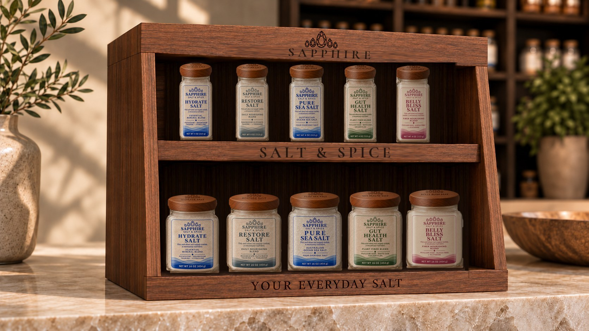

Salt is the one ingredient on every table, so we hold it to the highest standard we can. Here’s what goes into a jar — and what doesn’t.
Draft — Ryan to confirm every process, lab and limit on this page

Every blend starts with the same Australian ocean sea salt. No iodine, no anti-caking chemicals, no fillers.
Only ingredients you can pronounce, each with its own page explaining what it is and why it’s there.
An independent lab checks each batch of salt before it’s blended. If a lot fails, it doesn’t ship.
Measured, blended and jarred by hand in Utah, so every jar is traceable to its batch.
All salt carries traces of the earth and sea it comes from. Testing is how we make sure it’s only the good part.
Every label carries a lot number and a QR code. Scan it to see the test results for the exact salt in your jar — not a sample, not an average.
Coming with the new labelsOur Nutrition Facts are being recalculated blend by blend with a food-label specialist, so every number matches what’s really in the jar. Exact amounts will appear on each ingredient page.
Glass jars and wood lids you’ll keep on the table for years. Refill pouches are on the way, so you’ll rarely need a new jar.
Australian ocean sea salt today. We’re exploring Himalayan salt from Pakistan and salt from Utah’s Great Salt Lake — held to the same standard. See our salts
No. Like most sea salts, it does not supply iodide, a necessary nutrient. If you rely on salt for iodine, keep an iodized salt in the kitchen too.
No — it’s a culinary salt with a few intentional ingredients. Use it exactly like regular salt. It isn’t intended to diagnose, treat, cure or prevent any disease.
Every ingredient is plant- or mineral-based. Gluten-free certification: Ryan to confirm
It ties your jar to its batch of salt and its lab report, and lets us trace anything back to the source.